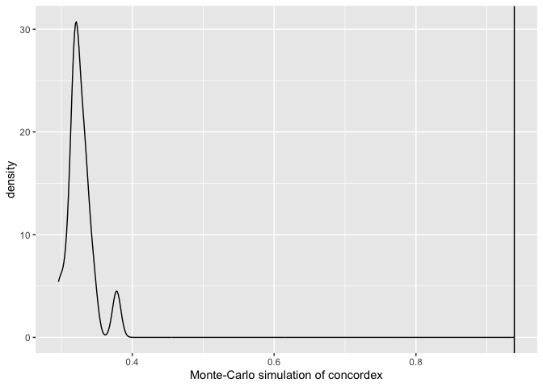
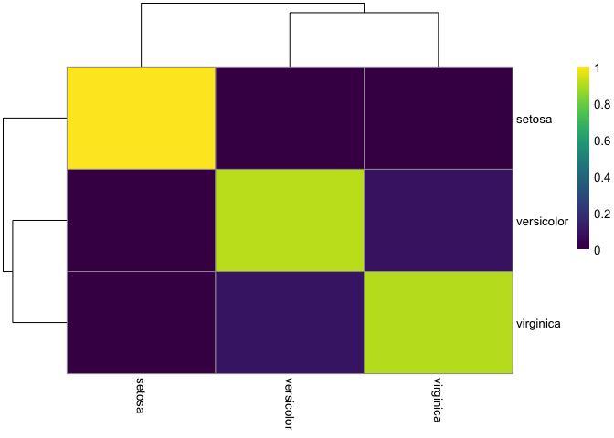

The goal of concordexR is to identify spatial homogeneous regions (SHRs) as defined in the recent manuscrpt“Identification of spatial homogenous regions in tissues with concordex”. Briefly, SHRs are are domains that are homogeneous with respect to cell type composition. concordex relies on the the k-nearest-neighbor (kNN) graph to representing similarities between cells and uses common clustering algorithms to identify SHRs.
Installation
You can install the development version of concordexR from GitHub with:
# install.packages("devtools")
devtools::install_github("pachterlab/concordexR")Example
This is a basic example using concordex:
res <- calculateConcordex(g$index, labels = iris$Species, k = 10, return.map = TRUE)
plotConcordexSim(res)
heatConcordex(res)